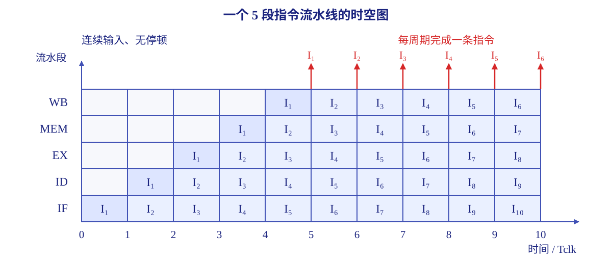

中央处理器¶
约 15303 个字 8 行代码 1 张图片 预计阅读时间 51 分钟
指令系统规定了处理器应当完成哪些操作，却没有说明这些操作怎样变成实际的数据传送、运算和状态变化。中央处理器（ Central Processing Unit ， CPU ）负责的正是后者：同一条指令，单周期实现一步做完，流水线实现则拆成若干段、与其他指令重叠执行，执行途中还可能被异常或中断打断。指令的含义由体系结构固定，而用哪种硬件组织去实现它并无定式，速度、成本与复杂度的差别正源于此。
CPU 的功能和基本结构¶
CPU 的功能¶
CPU 的核心工作是 执行程序。
传统教材常把这些工作概括为 指令控制、操作控制、时间控制、数据加工和中断处理：指令控制安排执行顺序，操作控制生成动作所需的信号，时间控制安排动作的时刻与先后，数据加工完成运算，中断处理则接入需要改变正常执行流程的事件。
落实到指令执行，需要完成以下工作：
| 功能 | 要完成的事情 |
|---|---|
| 取指与译码 | 从主存或指令 Cache 取得指令，识别操作码和其他字段 |
| 更新指令地址 | 确定后继指令的位置，支持顺序执行和程序转移 |
| 算术与逻辑运算 | 对操作数进行计算、比较、按位逻辑等操作 |
| 取操作数与写结果 | 在寄存器、主存和 I/O 接口之间交换信息 |
| 异常与中断处理 | 检测需要改变正常执行流程的事件，转入相应处理程序 |
| 时序控制 | 安排各操作的先后顺序和持续时间 |
这些功能需要共同工作。例如，一条加载指令既要被取出和译码，又要计算地址、读取数据、写入寄存器；过程中还可能发生缺页等异常。
CPU 的基本结构¶
从功能上看， CPU 可以分为 执行部件和控制部件。执行部件承担数据的运算与暂存，控制部件安排执行过程。进一步分析内部连接时，通常采用数据通路与控制器的划分。
基本组成模型中的主要部件如下：
| 部件 | 作用与特点 |
|---|---|
| 程序计数器 PC | 保存取指所需的指令地址；顺序执行时按指令长度递增，转移时装入目标地址 |
| 指令寄存器 IR | 暂存取出的机器指令，供译码和执行使用；基本定长指令模型中，其宽度等于指令字长 |
| 通用寄存器组 GPRs | 暂存操作数、中间结果和地址，减少访问主存的次数 |
| 标志寄存器 FR | 保存运算产生的条件码，供条件判断和转移使用；具体标志见带标志加法器 |
| 存储器地址寄存器 MAR | 暂存本次主存访问的地址 |
| 存储器数据寄存器 MDR | 暂存主存读出的内容或准备写入主存的内容 |
| 指令译码器 | 解析指令操作码，输出指令类型信息 |
| 算术逻辑单元 ALU | 完成算术和逻辑运算；运算电路见算术逻辑单元 |
| 时序信号产生部件 | 根据系统时钟产生周期、节拍等时序信号 |
| 操作控制信号形成部件 | 综合译码结果、时序和状态，产生微操作控制信号 |
| 总线控制逻辑 | 管理数据、地址和控制信息的传输 |
| 中断机构 | 检测并响应异常和外部中断请求 |
程序状态字（ Program Status Word ， PSW ）描述处理器的运行状态。除运算条件码外，还可包含中断允许位、特权级等信息；条件码和其他控制状态怎样分配到寄存器中，取决于具体体系结构。
PC 的含义要结合观察时刻
开始取指时， PC 给出本次要取的指令地址；取指后若已完成顺序递增， PC 就指向下一条顺序指令。分支又可能覆盖这个值。计算返回地址或转移目标时，应先确认讨论的是哪个时刻的 PC。
寄存器的位数由其保存的信息决定。在采用完整地址的基本模型中， PC、MAR 的宽度与地址宽度对应； MDR 的宽度与数据传送宽度对应。地址范围和编址单位的关系见编址单位与寻址范围。
这里列出的是便于分析的基本结构。具体实现可以合并、替换或省去某些部件，例如后面的单周期专用数据通路不设置单独的 IR。
CPU 中的寄存器¶
按机器语言或汇编语言程序能否访问，可以区分 用户可见寄存器 和 用户不可见寄存器。“可见”表示 ISA 提供了相应的访问或使用方式。
| 类别 | 典型寄存器 | 访问方式 |
|---|---|---|
| 用户可见 | GPRs、基址寄存器、变址寄存器、堆栈指针 | 通过指令读写，作为数据或地址操作数使用 |
| 用户可见的控制状态 | PC、运算条件码 | PC 可通过转移、调用等指令改变；条件码可通过条件指令使用 |
| 用户不可见 | IR、MAR、MDR | 由硬件在指令执行过程中使用，普通程序无法直接指定它们 |
| 普通用户程序不可访问的系统寄存器 | 页表基址等 | 由硬件或操作系统在特权模式下管理 |
用户程序通过普通指令使用数据寄存器、PC 和运算条件码；中断允许位、特权级等控制状态则按权限管理。寄存器的用途见基本结构。
指令执行过程¶
指令执行的一般流程¶
程序开始执行前，先把入口地址装入 PC。之后， CPU 不断完成以下循环：
非分支指令按需要取得操作数、完成运算并保存结果；分支指令则判断条件并选择后继地址。各执行阶段的具体任务见指令周期的基本概念。
正常执行流程还要接入异常与中断响应：异常可在相应执行阶段被发现；外部中断通常在指令边界处响应。响应后先执行处理程序，再根据事件性质决定继续执行的位置。
同一段二进制怎样被当作指令或数据？
存储内容本身没有“指令”或“数据”的固定标签。取指时，读出的内容送往指令译码路径；取操作数时，内容进入数据运算路径。CPU 通过 执行阶段和控制信号所选择的流向 区分它们。MDR 作为主存传输的缓冲部件，既可能暂存指令，也可能暂存操作数。
CPU 的时序控制¶
时钟周期 是系统时钟的一个周期，也是同步 CPU 的基本时间单位，常称为一个节拍。若主频为 \(f\)，则：
时钟提供更新状态的时间基准，控制信号决定本次更新发生在哪里。典型的边沿触发实现中，组合电路在两个时钟边沿之间完成计算，寄存器在指定边沿锁存结果。时钟周期需要满足数据通路的时序约束。
早期处理器常采用“机器周期—节拍—工作脉冲”的分级时序：
| 概念 | 含义 |
|---|---|
| 机器周期 | 完成取指、取操作数等一类基本操作的一段时间，通常包含若干节拍 |
| 节拍 | 安排一次或一组微操作的时间单位 |
| 工作脉冲 | 在节拍内部进一步确定某个动作的时刻 |
不同指令可以需要不同数量的机器周期，各机器周期也未必含相同数量的节拍。现代处理器常直接用统一时钟组织执行，一次访存和一条指令所需的周期数，由数据通路及控制时序决定。
指令周期的基本概念¶
指令周期 是从取出一条指令到完成其执行所经历的时间。最简单的划分是取指与执行两个阶段；典型的五阶段划分如下：
| 阶段 | 名称 | 主要操作 |
|---|---|---|
| IF | 取指 | 按 PC 读取指令，并形成顺序后继地址 |
| ID | 译码／读寄存器 | 识别指令，读取源寄存器，提取立即数等信息 |
| EX | 执行／计算地址 | 完成 ALU 运算，或计算有效地址、分支目标及条件 |
| MEM | 访存 | 为加载、存储指令读写数据存储器 |
| WB | 写回 | 将 ALU 结果或加载的数据写入目的寄存器 |
指令并不一定需要五种操作。例如，寄存器加法无需访问数据存储器，存储指令无需写回通用寄存器。阶段怎样映射到时钟周期，取决于处理器的执行模型。
在采用间接寻址的模型中，还可能设置 间址阶段或间址周期，先取得操作数的有效地址，具体语义见间接寻址。传统模型还可把中断响应的硬件操作列为 中断周期；进入服务程序后，软件处理再占用相应指令的执行时间。
指令字长 描述编码占多少位，指令周期 描述执行花多少时间。两者分别由指令格式和具体执行模型决定：等长指令也可以具有不同执行时间。
处理器指令执行模型¶
| 执行模型 | 指令的组织方式 | 时钟周期依据 | CPI 的特点 |
|---|---|---|---|
| 单周期 | 一条指令在一个时钟周期内完成，相邻指令串行执行 | 最慢指令的完整路径 | 每条指令均为 1 |
| 多周期 | 一条指令分多个时钟周期执行，前一条结束后才开始下一条 | 各执行步骤中最长的路径 | 因指令而异，平均值通常大于 1 |
| 流水线 | 多条指令的不同阶段重叠执行 | 最慢流水段及段间寄存器开销 | 理想单发射流水线充满后趋近于 1 |
单周期模型控制较简单，但简单指令也必须占用最慢指令决定的整个周期。多周期模型缩短时钟周期，并允许不同指令按需要使用不同数量的周期，还可以跨周期复用部件。
流水线通过重叠执行提高吞吐率，其详细实现见指令流水线。这里要区分 单条指令的延迟 和 连续指令的平均完成间隔：一条指令可以经历多个周期，而流水线仍能每周期完成一条指令。
数据通路的功能和基本结构¶
数据通路的功能¶
数据通路 是指令执行时数据所经过的路径，以及路径上的运算、暂存和传送部件。它回答三个问题：数据从哪里来，经过什么处理，最后送到哪里。
CPU 的工作可以从两个方面观察：
- 数据通路 提供寄存器、运算器和连线，实现数据操作。
- 控制器 决定何时选择哪条路径、执行哪种运算、允许哪个部件写入。
例如， ALU 能做加法或减法，多路选择器能选寄存器值或立即数，但本条指令具体使用哪一种，要由控制器产生的控制信号决定。数据通路中的位宽应与传送和运算的数据相匹配；控制信号的位宽则取决于需要区分多少种选择。
数据通路的组成¶
组合逻辑元件与时序逻辑元件¶
| 类别 | 输出取决于什么 | 是否保存状态 | 典型元件 |
|---|---|---|---|
| 组合逻辑元件，也称操作元件 | 当前输入 | 否 | 加法器、ALU、译码器、MUX、三态门 |
| 时序逻辑元件，也称状态元件 | 当前输入与已有状态 | 是 | 寄存器、寄存器堆、存储器 |
组合电路没有记忆状态，但输入变化后仍需要传播时间才能形成稳定输出。本章采用同步数据通路；写入状态元件按时钟安排，读端口则按其组合读或同步读的实现分析。
几个常见的路径控制元件值得单独区分：
- 译码器：把 \(n\) 位编码转换成最多 \(2^n\) 个互斥的选择输出。
- 多路选择器（ MUX ）：从 \(N\) 路输入中选出一路，至少需要 \(\lceil\log_2N\rceil\) 位选择信号。
- 三态门：使能时传递输入，关闭时输出呈高阻态。高阻态表示退出总线驱动，让其他部件使用这条线路。
数据通路与时钟周期¶
同步数据通路的基本形式为：
一个时钟边沿到来后， A 的新输出先稳定，再经过组合电路到达 B。为了让 B 在下一个边沿正确采样，输入必须提前满足建立时间。在不计时钟偏斜等额外因素的模型中：
其中，\(T_{\mathrm{clk\to q}}\) 是源寄存器的输出延迟，\(T_{\mathrm{comb,max}}\) 是组合逻辑最长路径的延迟，\(T_{\mathrm{setup}}\) 是目的寄存器的建立时间。目的端还需要满足边沿后的保持时间要求；保持时间需要由最短路径和时钟关系另行满足。
数据通路的组织与分类¶
按 部件连接方式，可以区分总线式与专用结构：
| 连接方式 | 特点 | 主要限制 |
|---|---|---|
| 单总线 | 部件共享一条 CPU 内部总线，连线少，便于扩展 | 同时只能传送一组数据，操作要分步完成 |
| 多总线 | 设置多条独立传送路径，可并行取得操作数或传送结果 | 硬件和控制比单总线复杂 |
| 专用数据通路 | 通过点对点连线连接所需部件，可并行传送多组数据 | 布线和硬件开销较大，扩展时需要重新安排连接 |
这里讨论 CPU 内部总线，系统总线则连接 CPU、主存和 I/O。多总线结构的并行传送能力由具体端口数和连接关系决定。
按 时序组织方式，可以区分单周期、多周期和流水线数据通路，其执行特征见处理器指令执行模型。这与连接方式是两个分类维度，不过组合也受硬件能力约束。
下面的单总线结构为什么需要多个周期？
单总线必须分时传送不同数据，而下面的结构还要把第一个操作数和运算结果分别锁存到 Y、Z 中，这些操作跨越多个时钟边沿。因此整条指令分多个周期完成；单周期实现需要足够的独立传送与运算路径。
单总线结构的数据通路¶
连接与控制信号¶
总线本身不保存信息。同一时刻，最多只能有一个部件驱动总线；多个目的寄存器在连接和写使能允许时，可以同时接收同一份总线数据。
控制信号通常按“部件名 + in/out”命名：PCout 允许 PC 向内部总线输出，MARin 允许 MAR 接收总线数据。Read、Write 管理主存读写，ALUop 选择 ALU 运算。若 ALU 支持 \(N\) 种操作，选择编码至少需要 \(\lceil\log_2N\rceil\) 位。
为让 ALU 的两个输入同时有效，需要增加暂存寄存器：
- Y 先保存第一个操作数，第二个操作数随后由总线送入 ALU 的另一输入端。
- Z 保存 ALU 的结果，再在后续节拍送回总线，避免输入数据和结果争用同一条总线。
下面约定 \(R[r]\) 表示寄存器内容，\(M[a]\) 表示地址 \(a\) 处的主存内容；所有表格均以所描述的单总线模型为准。
公共取指过程¶
假定主存从收到读命令到数据进入 MDR 需要 5 个时钟周期，暂不计 PC 增量操作，则：
| 时钟周期 | 数据操作 | 有效控制信号 |
|---|---|---|
| \(C_1\) | \(PC\to MAR\) | PCout、MARin |
| \(C_2\sim C_6\) | \(M[MAR]\to MDR\) | Read、主存读入 MDR 的使能 |
| \(C_7\) | \(MDR\to IR\) | MDRout、IRin |
MDR 的主存侧输入和内部总线侧输入各有来源与使能。分析控制信号时，先确定本步从哪条路径锁存数据； PC 增量则根据加法器和连线另外安排。
寄存器加法¶
指令功能为 \(R[r_s]+R[r_d]\to R[r_d]\)。完成上述取指后：
| 时钟周期 | 数据操作 | 有效控制信号 |
|---|---|---|
| \(C_8\) | \(R[r_s]\to Y\) | 选择 \(r_s\)、GPRout、Yin |
| \(C_9\) | \(Y+R[r_d]\to Z\) | 选择 \(r_d\)、GPRout、ALUop=ADD、结果锁存使能 |
| \(C_{10}\) | \(Z\to R[r_d]\) | Zout、选择 \(r_d\)、GPRin |
如果 Z 在每个时钟边沿默认锁存 ALU 输出，就不需要单列 Zin 信号；若有独立写使能，则还要把它置为有效。控制信号的清单应与数据通路图一致。
寄存器间接取数¶
指令功能为 \(M[R[r_s]]\to R[r_d]\)。取指阶段仍使用公共取指过程，执行阶段为：
| 时钟周期 | 数据操作 | 有效控制信号 |
|---|---|---|
| \(C_8\) | \(R[r_s]\to MAR\) | 选择 \(r_s\)、GPRout、MARin |
| \(C_9\sim C_{13}\) | \(M[MAR]\to MDR\) | Read、主存读入 MDR 的使能 |
| \(C_{14}\) | \(MDR\to R[r_d]\) | MDRout、选择 \(r_d\)、GPRin |
分析单总线时，从每一步数据流反推控制信号：先选总线来源，再确定接收寄存器，随后检查 ALU 输入与主存等待。依赖前一步锁存结果的操作，安排在后续节拍。
专用结构的数据通路¶
下面采用 32 位、按字节编址的 MIPS 风格单周期模型，指令长度为 4 字节，寄存器堆有两个读端口和一个写端口。这里分析单周期连接，流水段划分留到MIPS 指令集的流水段分析。
取指与后继地址¶
PC 直接向指令存储器提供地址，取出的指令字段直接进入译码和相关数据路径。本模型 不设置单独的 IR，否则把指令锁存进 IR 后再执行会跨越另一个时钟周期。
专用加法器生成顺序后继地址 \(PC+4\)；下地址逻辑再根据 Branch、Jump 和分支条件选择实际后继地址。对 beq， ALU 可以比较两个寄存器，Branch 与比较结果共同决定是否采用目标地址。具体目标计算见后面的分支分析。
运算、立即数与访存路径¶
| 指令示例 | 源数据与操作 | 写入位置 |
|---|---|---|
add rd, rs, rt |
两个读端口提供 \(R[rs]\)、\(R[rt]\)， ALU 求和 | \(R[rd]\) |
addi rt, rs, imm16 |
\(R[rs]\) 与符号扩展后的立即数相加 | \(R[rt]\) |
lw rt, imm16(rs) |
ALU 形成有效地址，再读取数据存储器 | \(R[rt]\) |
sw rt, imm16(rs) |
ALU 形成有效地址，第二读端口提供待存数据 \(R[rt]\) | 数据存储器 |
访存地址为：
支持这些指令，需要在不同来源的汇合处设置选择器，并给有状态的写操作设置使能：
| 控制信号 | 控制的对象 | 本模型中的约定 |
|---|---|---|
RegDst |
目的寄存器编号 | 1 选 rd， 0 选 rt |
ALUSrc |
ALU 第二操作数 | 0 选寄存器， 1 选扩展后的立即数 |
ExtOp |
立即数扩展方式 | 算术立即数和地址偏移量符号扩展，逻辑立即数按指令要求零扩展 |
ALUctr |
ALU 运算类型 | 加、减、与、或等 |
MemtoReg |
写回寄存器的数据来源 | 0 选 ALU 结果， 1 选主存读出值 |
RegWr |
寄存器堆写使能 | 运算、加载时有效；存储、普通分支时无效 |
MemWr |
数据存储器写使能 | 仅存储指令有效 |
sw 的数据不经过立即数选择器： ALU 的第二输入选择偏移量，而数据存储器的写数据端仍接寄存器堆第二读端口。计算地址和取得待写数据是两条不同的路径。
对于需要报告有符号溢出的 add、addi，只有未发生溢出时才允许正常写回；在简化模型中，可以用 \(\mathrm{RegWr}\land\lnot\mathrm{Overflow}\) 控制写入。地址计算采用不触发有符号溢出异常的加法，具体区别应看指令语义。
单周期实现的资源要求¶
一条指令可能先取指、再访问数据存储器，因此本模型把两者分开，提供独立访问路径。PC 更新、分支目标计算和 ALU 运算也需要相应的专用资源，同一周期需要完成的独立用途分别配置相应资源。
这里的多个操作通过组合电路在同一周期内传播，并不表示它们都在同一时刻完成。最终写入 PC、寄存器堆或数据存储器仍由时钟和写使能约束。完整周期的长度取决于最长指令路径。
控制器的功能和工作原理¶
控制器的结构和功能¶
控制器把指令要求转化为对数据通路的控制。它需要取得指令及相关状态，记住执行进展，并形成本阶段的控制信号。取指、译码和更新 PC 等职责见CPU 的功能，本节关注这些信号怎样生成。
控制器还通过系统总线协调外部访问：地址信号指定主存单元或 I/O 接口，读写信号指定操作方向，数据线传送实际内容。主存和设备接口共同完成传输，控制器需要按相应时序发出命令。
按 微操作控制信号的形成方式，主要分为硬布线控制器和微程序控制器。
硬布线控制器¶
硬布线控制器，也称组合逻辑控制器，用组合逻辑和状态触发器直接生成控制信号。其输出可以概括为：
| 输入 | 为什么需要 |
|---|---|
| 指令信息 | 区分本条指令需要的操作；\(n\) 位操作码可经译码形成最多 \(2^n\) 个选择输出 |
| 时序与状态 | 区分同一条指令的不同执行步骤 |
| 执行部件反馈 | 根据零标志、进位、溢出等决定是否写入或转移 |
设计时，先列出各指令在各节拍需要的微操作，再整理每个控制信号的有效条件，形成并化简逻辑表达式。单周期控制器通常只需依据指令和状态生成一组控制；多周期控制器还要随执行阶段改变输出。
控制信号经过硬件逻辑直接产生，速度主要受电路传播延迟限制。指令和状态组合越复杂，电路设计与调试也越困难。它与微程序控制器的完整比较见控制器的实现特点。
微程序控制器¶
基本概念¶
微程序控制器 把控制步骤编码为存放在控制存储器中的微指令，通过读取并执行微指令产生控制信号。
| 概念 | 含义 |
|---|---|
| 微命令 | 控制部件向执行部件发出的基本控制信号，如寄存器写使能、总线输出使能 |
| 微操作 | 执行部件在微命令作用下完成的基本动作 |
| 微指令 | 在一个微周期中发出的一组微命令及相关顺序控制信息 |
| 微程序 | 按执行顺序组织的微指令序列，用来实现机器指令或公共控制过程 |
| 微周期 | 执行一条微指令的时间单位，在常用模型中为一个时钟周期 |
微操作包括寄存器传送、算术、逻辑和移位等。微命令是控制信号，微操作是信号引起的动作。硬布线控制器直接生成这些信号，微程序控制器则从微指令中取得它们。
可以同时发出的微命令称为 相容性微命令，同一时刻不能同时发出的称为 互斥性微命令。例如，单总线上两个不同来源的输出使能互斥，而一个输出使能与接收该数据的寄存器写使能相容。相容性由具体连线和资源限制决定。
微指令通常分为两个部分：
操作控制字段说明本微周期发出哪些微命令；顺序控制字段提供测试条件、后继微地址等信息，用于决定接下来执行哪条微指令。
控制存储器与主存储器¶
| 对比项 | 主存储器 | 控制存储器 CM |
|---|---|---|
| 主要内容 | 机器程序和数据 | 微指令、微程序 |
| 所属层次 | 程序运行的存储空间 | CPU 内部控制部件 |
| 基本地址 | 主存地址 | 微地址 |
| 常见实现 | RAM | 高速 ROM 等 |
程序由软件开发者编写，微程序通常由处理器设计者编写。机器指令属于 ISA ，微指令属于控制器实现，普通程序员无须了解微程序的内部排列。
微程序控制器新增两类寄存器：微地址寄存器 \(\mu PC\)（或 CMAR ）保存控制存储器的读地址，微指令寄存器 \(\mu IR\)（或 CMDR ）保存读出的微指令。它们与主存访问的 MAR、机器指令的 IR属于不同层次。
组成与工作过程¶
除 CM、\(\mu PC\) 和 \(\mu IR\) 外，还需要 微地址形成部件，根据机器指令操作码、当前微指令的顺序控制信息和状态条件产生微地址。
一次机器指令执行通常经历以下步骤：
- 将公共取指微程序的入口送入 \(\mu PC\)，逐条读取并执行其微指令，取得机器指令。
- 根据机器指令的操作码，生成对应执行微程序的入口地址。
- 读取微指令到 \(\mu IR\)，发出本周期微命令，同时形成下一微地址；重复这一过程。
- 当前指令的微程序结束后，返回公共取指微程序，再处理下一条机器指令。
公共取指过程不依赖尚未取得的机器指令操作码，因此可供所有指令共用。间址、中断响应等公共过程也可以单独编写微程序。
在“一种机器指令对应一个执行微程序，公共过程分别独立”的模型中：
每个微程序再由若干条微指令组成；主存中同类机器指令重复执行时，共用对应的控制过程。
微指令的编码方式¶
编码方式主要针对操作控制字段，目的是在微指令长度、译码开销和并行能力之间取得平衡。
| 方式 | 编码方法 | 特点 |
|---|---|---|
| 直接编码／直接控制 | 每个微命令占一位，置有效值即发出该命令 | 无须译码，直观、并行能力强，但控制字段很长 |
| 字段直接编码 | 将互斥微命令编入同一字段，各字段独立译码 | 字长较短，需要译码；不同字段可同时发出命令 |
| 字段间接编码 | 一个字段的含义还取决于另一个字段的编码 | 可进一步压缩，但译码与控制更复杂 |
字段直接编码需要遵守：互斥命令放在同一字段，需要同时出现的相容命令分配到不同字段；每个字段还应预留 无操作编码。
若第 \(i\) 个字段有 \(m_i\) 个互斥微命令，包含无操作状态后至少需要：
例如，两个独立字段分别包含 4 个和 9 个微命令，则需要 \(3+4=7\) 位。若用直接编码，则这 13 个微命令需要 13 位。完整微指令还要加上顺序控制等字段。
编码压缩与并行能力
假设 ALU 类和存储类微命令可以同时出现。如果只用一个操作字段加“类别位”，一次只能选择其中一类，就失去了两类并行控制的能力。压缩字段时，应同时保留实际需要的微命令组合。
微指令的地址形成方式¶
后继微地址主要有两种组织方式：
- 增量方式：由 \(\mu PC+1\) 产生后继地址，适合顺序执行。
- 断定方式：由当前微指令的下址字段给出后继地址，适合显式指定下一控制步骤。
实际微地址形成还要覆盖以下情况：
| 情况 | 微地址来源 |
|---|---|
| 进入机器指令的执行微程序 | 机器指令操作码的映射结果 |
| 微程序内部顺序执行 | \(\mu PC+1\) 或显式下址 |
| 条件微转移 | 下址字段结合状态或测试条件 |
| 执行结束 | 公共取指微程序入口 |
控制存储器若包含 \(N\) 个可寻址单元，微地址至少需要 \(\lceil\log_2N\rceil\) 位。若下址字段直接指定完整微地址，它也要能覆盖整个微地址空间，宽度按整个可寻址控制存储器计算。
水平型与垂直型微指令¶
| 对比项 | 水平型 | 垂直型 |
|---|---|---|
| 组织方式 | 多个控制位或控制字段，加上顺序控制信息 | 类似机器指令，用微操作码及操作数字段描述操作 |
| 一条微指令的工作量 | 可控制多个相容微操作 | 通常描述一个基本微操作，并行能力较弱 |
| 微指令字长 | 较长 | 较短 |
| 完成同一任务的微程序长度 | 通常较短 | 通常较长 |
| 执行与编写特点 | 控制灵活、效率较高，编写较复杂 | 格式规整、容易编写，通常需要更多微周期 |
水平型可以采用直接编码、字段直接编码或字段间接编码。水平型侧重一条微指令并行控制多个相容微操作，垂直型则用较紧凑的微操作码描述基本操作。
控制器的实现特点¶
| 对比项 | 硬布线控制器 | 微程序控制器 |
|---|---|---|
| 控制信号来源 | 指令、时序与状态经过逻辑电路生成 | 读取微指令，再直接输出或译码生成 |
| 执行速度 | 通常较快，受逻辑电路延迟限制 | 还需访问控制存储器，通常较慢 |
| 结构与设计 | 复杂指令下逻辑繁杂，调试困难 | 结构较规整，控制步骤容易组织 |
| 修改扩展 | 通常需要调整硬件逻辑 | 可通过调整微程序实现，但取决于 CM 是否可修改 |
| 常见关联 | 常用于 RISC 风格设计 | 常用于复杂指令的控制实现 |
ISA 的设计风格和控制器实现是两个层次： RISC 常配合硬布线控制， CISC 的复杂操作常用微程序实现；具体设计可以组合不同技术。指令集层面的对照见CISC 和 RISC。
异常和中断机制¶
异常和中断的基本概念¶
CPU 执行过程中，某些事件需要暂时改变正常指令流，进入专门的处理程序：
- 异常 来自处理器内部，通常与当前指令执行有关，如非法指令、除零、地址越界和缺页。
- 外部中断 来自处理器外部，如 I/O 完成、定时器到时，与当前执行哪条指令通常无关。
程序性异常是 同步事件，在译码、地址转换或运算等相应阶段检测；外部中断是 异步事件，基本模型在指令完成后的边界检查并响应。事件出现、CPU 响应和软件处理，是先后相接的几个环节。
操作系统利用这些机制接管设备事件和执行错误；用户程序通过陷入进入内核，请求系统调用。运行权限的组织见特权模式。
异常和中断的分类¶
异常按恢复语义分为故障、自陷和终止。外部中断按是否受通常的中断允许控制，分为 可屏蔽中断 和 不可屏蔽中断：前者用于一般设备服务，可暂时禁止；后者用于掉电等紧急事件，按专门规则响应。下面结合断点位置说明各类事件。
返回地址与是否重执行¶
| 事件 | 检测或响应特点 | 处理后的继续位置 |
|---|---|---|
| 故障 Fault | 指令开始后、正常完成前发现问题 | 可恢复时返回引发故障的指令，重新执行；不可恢复时终止程序 |
| 自陷 Trap | 常用模型中在指令完成后转入预先安排的处理流程 | 从自陷指令的下一条指令继续 |
| 终止 Abort | 严重硬件或系统错误，难以保证可恢复的执行状态 | 通常无法恢复原程序，转入错误处理或重启流程 |
| 外部中断 Interrupt | 在正常指令执行边界响应 | 从被中断程序本应执行的后继指令继续 |
缺页故障在页面调入后重新执行原访问；非法指令、除零等故障通常需要软件报告错误或结束程序。自陷用于系统调用、断点、单步跟踪等预先安排的控制转移，基础模型从其后继指令继续。
其他分类维度¶
按 处理程序入口的确定方式，可以分为：
- 向量中断：硬件取得事件类型号，据此定位对应处理程序；各入口信息集中保存在中断向量表中。
- 非向量中断：先转入统一入口，再由软件查询设备状态，确定中断源和处理程序。
按 处理期间是否允许嵌套，可以分为单重中断与多重中断。前者在服务期间禁止新的可屏蔽中断，后者允许满足优先级要求的请求进入嵌套处理。实现多重中断需要保存各层断点、状态，并配合中断屏蔽和优先级控制。
异常和中断响应过程¶
要区分 响应过程 和 处理程序。响应过程是从检测到事件到进入处理程序之前的硬件操作；处理程序是随后执行的软件。基本硬件响应可概括为三个步骤：
关中断¶
在保存关键状态期间， CPU 暂时禁止可屏蔽中断，避免保存过程被打断。在用 IF 表示中断允许状态的模型中，IF=0 为关中断，IF=1 为开中断。
这里的关中断针对可屏蔽外部中断；异常与不可屏蔽中断使用各自的响应规则。关键状态保存完成后，若支持多重中断，服务程序可配合屏蔽字重新允许更高优先级的请求。
保存断点和程序状态¶
硬件至少要保存恢复执行所需的 返回地址和 PSW 等关键状态。返回地址按事件类别确定；对外部中断，应保存程序实际的后继地址。例如刚完成一条转移指令时，后继可能是转移目标，而非地址上相邻的下一条指令。
返回地址与状态可以保存到栈或专用寄存器。栈式保存支持逐层嵌套；寄存器式保存则需要在下一次事件覆盖这些寄存器前，把外层状态转存到安全位置。
硬件保存用于恢复控制流的关键状态。处理程序还需保存自己将改写的通用寄存器，结束时恢复现场，再通过专用返回指令恢复断点和运行状态。
识别事件并转入处理程序¶
在向量方式下，硬件取得事件类型号，定位相应入口，更新 PC ，并进入处理程序所需的运行模式。要区分三个量：
| 名称 | 含义 |
|---|---|
| 中断类型号／中断号 | 标识事件的编号 |
| 中断向量 | 相应处理程序的入口信息；简单模型中为入口地址 |
| 向量表项的地址 | 保存这项入口信息的位置 |
例如，向量表以地址 \(B\) 为起点，每项占 \(s\) 字节，则第 \(i\) 项的位置为 \(B+i\times s\)。CPU 还要读取该项的入口信息，才能转入服务程序，表项地址用于读取入口信息，读出的地址才送入 PC。
进入处理程序后，缺页调入、设备服务、系统调用分发等操作由软件完成。异常与中断的整体处理因而是硬件与操作系统共同完成的。
指令流水线¶
指令流水线的基本概念¶
指令流水线 把一条指令的执行分成若干有序阶段，让不同指令同时处于不同阶段。
举例来说，一个理想的五段流水线的执行时序如下，每一列表示一个时钟周期：
| 指令 | 1 | 2 | 3 | 4 | 5 | 6 | 7 |
|---|---|---|---|---|---|---|---|
| \(I_1\) | IF | ID | EX | MEM | WB | — | — |
| \(I_2\) | — | IF | ID | EX | MEM | WB | — |
| \(I_3\) | — | — | IF | ID | EX | MEM | WB |
第 5 个周期可有 5 条指令分别占据 5 个阶段。流水线充满后，在连续输入、无冒险和无停顿的理想条件下，每周期完成一条指令。这体现了 时间上的并行；配置多套执行资源同时处理指令，则体现空间上的并行。
便于实现规整流水线的 ISA 特征包括：指令等长、寄存器字段位置固定、采用 LOAD/STORE 结构，以及指令和数据按边界对齐。它们使取指、译码和访存的步骤更容易划分。规整的 ISA 能简化流水控制；其他指令格式也可以借助更复杂的译码与控制实现流水执行。
流水线的基本实现¶
流水段与段间寄存器¶
典型五段流水线需要四组 流水段寄存器：
它们保存前一阶段的输出，让后一阶段在下一个周期使用。除操作数、中间结果外，还必须把 目的寄存器编号和后续控制信号 随指令一起传递，否则 WB 阶段可能使用后一条指令的寄存器编号，或把不同指令的控制混在一起。
段间寄存器把相邻阶段隔开，使每个阶段能处理不同指令。所有阶段在同一时钟下推进，各段执行完毕的结果在边沿锁存。遇到冒险时，还需有保持或清除相应状态的控制。
时钟周期与执行延迟¶
设各段组合逻辑延迟为 \(t_1,\ldots,t_k\)，段间寄存器的输出、建立等开销合计为 \(t_r\)，则：
忽略段间寄存器开销时，时钟周期由最慢流水段决定，即 \(T_{\mathrm{clk}}=\max_i(t_i)\)。各段越均衡，同一个周期内被浪费的时间越少；细分流水段也必须考虑新增寄存器开销。
例如，五个阶段分别需要 \(200,100,150,200,100\mathrm{ps}\)，忽略寄存器开销：单周期实现需要 \(750\mathrm{ps}\)；流水线时钟周期为 \(200\mathrm{ps}\)，单条指令经历 5 个周期，需要 \(1000\mathrm{ps}\)。流水线提高了连续执行的吞吐率，却没有缩短这条指令的延迟。
时空图与吞吐率¶
时空图的横轴是时间，纵轴是流水段。沿一条指令的轨迹看它何时经过各阶段；沿同一时间列看各段正在处理哪条指令。若以时刻 0 为时间起点，第一个周期结束于 \(T_{\mathrm{clk}}\)，各阶段在对应的周期区间内推进。

图中，\(I_1\) 在第 5 个周期末完成，\(I_2\) 在第 6 个周期末完成；到第 10 个周期末，共完成 6 条指令。单条指令仍经过 5 个阶段，但不同指令的执行时间彼此重叠。
对 \(k\) 段单发射流水线，连续执行 \(n\) 条指令，假定没有停顿，则总周期数为：
前 \(k\) 个周期完成第一条指令，随后每条再增加一个周期。因此吞吐率为：
只有在 \(n\) 足够大时，有限序列的平均吞吐率才接近理论最大值。若以完成整个序列的总周期数计算平均 CPI ，则：
出现总计 \(S\) 个额外停顿周期时，可在同一模型下写为 \(T_n=(k+n-1+S)T_{\mathrm{clk}}\)。\(S\) 表示多种阻塞共同造成的实际额外周期数，同一周期内的重叠等待只占一个周期。
流水段越多，指令执行就越快吗？
细分流水段确实可能缩短时钟周期，但也会同时增加段间寄存器开销、冒险等待和控制复杂度。执行时间是时钟周期与实际总周期数的乘积，细分流水段的收益取决于两者共同形成的带停顿的总时间。更具体的取舍见超流水线。
MIPS 指令集的流水段分析¶
本节继续采用前面的 MIPS 风格模型，不考虑分支延迟槽。
运算与访存指令¶
所有指令先完成 IF、ID ；之后根据类型使用不同部件：
| 类型 | EX | MEM | WB |
|---|---|---|---|
| R 型运算 | 对两个源寄存器运算 | 空操作 | 结果写入 rd |
| I 型立即数运算 | 对寄存器与扩展立即数运算 | 空操作 | 结果写入 rt |
lw |
形成有效地址 | 读取一个字 | 读出值写入 rt |
sw |
形成有效地址 | 将 rt 的值写入主存 |
空操作 |
lw 需要完整的五个功能阶段；运算指令只需要四种实际操作，sw 不需要寄存器写回。空阶段表示该指令在相应位置不做有效操作，并不表示后续指令可以直接跨过统一的时序安排。
分支与无条件转移¶
对于 beq rs, rt, imm16，比较 \(R[rs]\) 与 \(R[rt]\)，其目标地址为：
这里 \(PC_{\mathrm{branch}}\) 是分支指令本身的地址，偏移量以字为单位，因此要左移 2 位。其他 ISA 的基准与位移单位分别由其规则确定，通用概念见相对寻址。
在本节模型中， EX 比较寄存器并计算目标， MEM 根据结果更新 PC ， WB 为空。分支的 MEM 段不执行数据存储器访问，只是把 PC 更新安排在该阶段。若实现把判断和 PC 更新提前，控制冒险代价也会变化。
无条件转移 j 不需要比较，目标确定和 PC 更新可安排在 EX ，之后的 MEM、WB 为空。
统一流水段的位置¶
虽然不同指令所需的功能不同，统一实现仍需使相同部件在固定阶段使用。例如，运算指令与 lw 的寄存器写回都安排在 WB ，前者在 MEM 位置留空，而不能提前到第 4 段写回并与另一条指令争用写端口。
统一流水线保留各阶段的位置，部分阶段以空操作通过。单条指令的延迟，按规定的进入、完成或提交时刻计算。
流水线的冒险与处理¶
流水线冒险 是指某种情况使指令无法按照预定时序安全推进。按成因分为结构冒险、数据冒险和控制冒险。
结构冒险¶
结构冒险源于 同一时刻争用同一个硬件资源。例如，指令与数据共用单端口存储器时，一条 lw 在 MEM 阶段访存，可能与另一条指令的 IF 取指冲突。
主要解决办法是：
- 暂停其中一次操作，让另一条指令先使用资源。
- 增加或分离资源，例如采用独立的指令、数据 Cache ，增加寄存器堆端口。
- 固定部件的使用阶段，避免不同类型指令在不同位置写同一端口。
寄存器堆若支持同周期先写后读，就能让 WB 写入的新值被 ID 读取。采用这种端口时序时， WB 与 ID 可以在同一周期交换新值。
数据冒险与 RAW¶
数据冒险涉及指令间的数据依赖。典型的按序五段流水线中，最常见的是 写后读（ Read After Write ， RAW ）：后一条指令需要读取前一条指令尚未产生或尚未送达的结果。
若 add 从第 1 周期进入流水线，sub 紧随其后，后者在第 3 周期 ID 时就读取 r1，前者却到第 5 周期 WB 才写回。直接使用寄存器旧值会出错。
解决方法一：推迟相关指令。 软件可以插入 nop，硬件也可以停住相关指令并插入气泡。对上述时序，不使用旁路时：若必须在 WB 后一个周期读取，要推迟 3 周期；若支持同周期先写后读，可推迟 2 周期。
解决方法二：转发／旁路。 add 在 EX 结束时就已产生结果，无须等到 WB。通过旁路把 EX/MEM 等段间寄存器中的结果送到后续 ALU 输入，sub 可在第 4 周期 EX 使用新值，消除这里的停顿。
解决方法三：调整指令顺序。 编译器可把无依赖的指令放到生产者与消费者之间，利用等待时间完成有用工作，但必须保持原程序的数据和控制语义。
判断依赖会造成多少停顿，关键在于 结果何时可用、消费者何时需要、是否有对应旁路。对于乱序或不同执行延迟的结构，还可能出现WAR 与 WAW。
读后写（ WAR ）与写后写（ WAW ）相关¶
除了前面讨论的写后读 RAW，非按序执行或不同完成延迟的结构还需要关注寄存器读写顺序。
读后写 WAR¶
读后写（ Write After Read ， WAR ）要求前面的指令先读取旧值，后面的指令才能覆盖该位置：
如果 I2 在 I1 读取之前就写了 r1，I1 会错误地使用新值。这里 I2 的目的寄存器是 I1 的源寄存器，它们没有“前者产生结果供后者使用”的数据传递关系。
写后写 WAW¶
写后写（ Write After Write ， WAW ）要求对同一目的寄存器的两次写入保持程序顺序：
程序最终应保留 I2 的结果。如果先写入 I2 的结果，再被 I1 覆盖，最终状态就会出错。
WAR、WAW 由复用同一个寄存器名形成，也称名字相关，可以通过 寄存器重命名 将不同版本安排到不同存储位置，消除不必要的顺序约束。RAW 则是真实的数据依赖，消费者仍需等待生产者的结果。
典型按序五段流水线把读寄存器固定在 ID、写寄存器固定在 WB ，且按序完成，因此不会出现 WAR、WAW 冒险。若读写阶段或完成顺序发生变化，则重新检查这些依赖。
load-use 冒险¶
加载结果直到 MEM 结束才出现。紧随 lw 的运算指令在同一个周期的 EX 就需要它，因此常规五段流水线即使有旁路，也需先等待一个周期。
使用硬件停顿和转发的一种时序为：
| 指令 | 1 | 2 | 3 | 4 | 5 | 6 | 7 |
|---|---|---|---|---|---|---|---|
lw |
IF | ID | EX | MEM | WB | — | — |
add |
— | IF | ID | ID 保持 | EX | MEM | WB |
第 4 周期保持 add，并在 EX 插入一个气泡；第 5 周期从 MEM/WB 转发加载值给 add。旁路负责传递已有的结果，无法提前产生尚未从主存读出的数据。
气泡是一段没有有效指令操作的流水线位置；硬件可通过清除控制信号实现它。nop 是指令集中实际编码的空操作，两者对时序可能起到相同作用，但实现不同。
控制冒险¶
控制冒险源于 后继指令地址尚未确定或已经改变。分支、返回、异常和中断等都可能让已取入的指令失效。
以MEM 阶段末确定转移的模型为例：若分支在第 1 周期 IF ，则到第 4 周期末才确定后继。完全等待时，正确后继只能在第 5 周期开始取指，相对每周期取指的理想情况损失 3 周期。
| 处理方法 | 思路 |
|---|---|
| 停顿或插入空操作 | 等待方向和目标确定后再继续 |
| 提前确定分支 | 尽早计算目标和条件，减少不确定的周期数 |
| 静态预测 | 采用固定规则，例如预测不转移 |
| 动态预测 | 根据运行时历史预测方向及目标 |
预测正确时可以继续已有指令；预测错误时，应清除错误路径上的指令，恢复正确 PC ，并重新取指。预测失误代价取决于分支在哪一段确定，以及哪些指令已经进入流水线。
清除与停顿解决的问题不同
停顿保留暂时无法推进的有效指令，等待其条件满足；清除丢弃不应继续执行的指令。流水线中的精确异常处理还需让较早指令完成，禁止故障指令的不合法结果，撤销其后的指令，再转入处理程序。
Cache 缺失也可能增加等待周期，异常和中断还可能使正常指令流暂停。这些因素都应计入实际执行时间。
高级流水线技术¶
超标量与动态多发射¶
超标量处理器 配置多个执行部件，在一个时钟周期中发射多条独立指令。它通过增加资源提高指令级并行度，增加的是每周期可发射的指令数。
简单实现可以按序发射；结合 动态调度 后，处理器根据操作数和资源是否就绪选择可执行指令，允许无依赖的后续指令越过等待中的指令执行。执行顺序变化仍需保持程序的数据结果与异常行为。
发射、执行完成和提交是不同的时刻。执行完成后，还需要在允许提交时更新程序可见状态；支持推测和乱序执行的设计需要保证错误路径和异常后的指令能被撤销。
如果发射宽度为 \(m\)，理想情况下每周期完成 \(m\) 条指令，则：
这里的 IPC 是每周期完成的指令数， CPI 是其倒数。数据依赖、资源冲突、分支和访存延迟都会使实际 IPC 低于上限。
超长指令字与静态多发射¶
超长指令字（ Very Long Instruction Word ， VLIW ）由编译器挖掘可并行执行的操作，并把它们打包到一条包含多个操作字段的长指令中，分别控制多个处理部件。
与动态多发射相比， VLIW 主要在编译阶段安排并行性，运行时的调度控制较简单；但编译器必须处理依赖与资源约束，并把操作放到适合的执行位置。能够使用多少并行槽，还取决于程序本身有多少独立操作。
超流水线¶
超流水线 通过进一步细分流水段来缩短时钟周期，提高主频。理想的单发射超流水线在充满后仍是每周期完成一条指令， CPI 接近 1 ；它提高的是周期频率，而非每周期发射宽度。
增加级数会增加段间寄存器开销，也可能扩大分支失误和某些依赖的等待代价，并使控制复杂化。流水级数的收益应综合时钟周期、停顿和指令总数判断。
多处理器的基本概念¶
SISD、SIMD、MIMD 的基本概念¶
Flynn 分类 按指令流和数据流的数量区分体系结构。这里的“流”描述独立的控制与数据序列，按独立控制流计数。
| 结构 | 全称 | 特点与典型形式 |
|---|---|---|
| SISD | Single Instruction Single Data | 一个指令流控制一个数据流，传统单处理器结构 |
| SIMD | Single Instruction Multiple Data | 一个指令流对多个数据流执行相同操作，体现数据级并行 |
| MISD | Multiple Instruction Single Data | 多个指令流处理同一数据流，通用系统中少见 |
| MIMD | Multiple Instruction Multiple Data | 多个处理器或核独立执行不同指令流，处理各自的数据 |
SISD 可以通过流水线和多个功能部件重叠处理同一指令流中的指令；各条指令仍由同一个程序控制流安排。
SIMD 与向量处理器¶
SIMD 适合数组、矩阵、图像等规则运算。例如，将多对数据相加时，各处理单元执行相同的加法，处理不同元素。若不同数据需要走不同分支，各单元的工作难以保持一致，部分执行能力可能空闲。
向量处理器 通过向量指令处理一组元素。典型的向量寄存器结构先把数据加载到向量寄存器，通过流水化部件批量运算，再写回存储器。它属于 SIMD 思路的一种实现，向量元素可以分批流经流水化部件。
MIMD 的两种组织¶
| 类型 | 地址空间与通信 |
|---|---|
| 多计算机系统／消息传递型 MIMD | 各节点有私有存储器和独立地址空间，通过消息传递通信 |
| 多处理器系统／共享存储型 MIMD | 处理器共享地址空间，通过普通访存指令读写共享数据 |
SIMD 侧重同一操作作用于多份数据， MIMD 则支持独立的线程或任务。共享存储型的进一步组织见共享内存多处理器。
硬件多线程的基本概念¶
硬件多线程 为多个线程保存独立的关键处理器状态，例如 PC 和通用寄存器组，让 CPU 可以快速选择另一个线程继续执行，减少把上下文反复存取到内存的开销。线程的操作系统概念见线程。
这些线程共享一个核中的执行单元和部分存储资源。按选择线程的方式，可分为三类：
| 方式 | 线程选择时机 | 同一周期的发射来源 | 特点 |
|---|---|---|---|
| 细粒度多线程 | 频繁切换，典型情况下每周期选择另一个就绪线程 | 一个线程 | 可隐藏短、长停顿，但单个线程获得的发射机会减少 |
| 粗粒度多线程 | 当前线程发生高延迟阻塞时切换 | 一个线程 | 主要隐藏长延迟；通常有排空或重新填充流水线的开销 |
| 同时多线程 SMT | 按就绪情况共同选择指令 | 可来自多个线程 | 结合多发射能力，更充分利用同一核的执行资源 |
区分发射来源与流水线中正在执行的指令
细粒度多线程每周期选择一个线程发射，不同周期发射的各线程指令可以同时处于不同流水段。SMT 进一步允许同一周期的多个发射槽由不同线程使用。
Intel 的超线程是 SMT 的典型例子。多个逻辑处理器各自维护线程状态，共享一个物理核的执行资源；实际吞吐率取决于可并行指令和资源竞争程度。
多核处理器的基本概念¶
多核处理器 把多个处理核心集成在同一个芯片中，也称片上多处理器。每个核有自己的执行与控制能力，可同时推进独立的线程。
多核 Cache 可以结合私有和共享组织，例如每核私有 L1、多个核共享更高层 Cache。具体层级的共享关系由实现规定。
充分利用多个核，需要有足够的可并行任务：它们可以来自不同进程，也可以来自同一程序的多个线程。单条线程仍由相应核心推进；程序中的串行部分、线程通信、同步与存储带宽都可能限制加速效果。
多核与硬件多线程可以同时存在：前者增加独立核心，后者在一个核内维护多个线程状态。描述处理器并行能力时，应分别确认物理核心数、每核的线程支持和执行资源。
共享内存多处理器的基本概念¶
共享内存多处理器具有 统一的物理地址空间。各 CPU 可通过加载、存储指令访问共享内存，并通过共享变量通信。本节用 SMP 表示这种共享内存多处理器组织。
统一物理地址空间让各处理器能够访问同一份物理数据；各进程仍可以拥有独立虚拟地址空间，再通过地址转换映射到物理内存。
UMA 与 NUMA¶
| 组织 | 访存特点 | 主要影响 |
|---|---|---|
| 统一存储访问 UMA | 各 CPU 访问各主存位置的延迟基本相同 | 集中的内存接口或共享互连可能成为带宽瓶颈 |
| 非统一存储访问 NUMA | 延迟取决于 CPU 与目标内存的物理位置 | 本地内存通常比远程内存更快，数据布局和线程位置影响性能 |
一种 NUMA 组织是在各 CPU 附近配置内存控制器和本地内存，通过互连访问其他节点的远程内存。物理上分布的内存仍可组成统一地址空间；消息传递型多计算机则各自维护独立地址空间。
同步与 Cache 一致性¶
多个处理器读写同一变量时，需要分别处理两个问题：
- 并发访问是否正确：共享数据的操作需要原子性、互斥与必要的顺序保证。具体机制见操作系统中的互斥锁和硬件原子指令。
- 各 Cache 副本能否保持一致的读写语义：一个物理地址可能同时缓存在多个 CPU 中；某 CPU 写入后，其他 CPU 不能继续把过期副本当作最新数据读取。
多处理器 Cache 一致性协议通过更新传播或旧副本失效，维护同一地址的读写语义。回写 Cache 允许主存暂时保留旧值，协议负责协调哪个副本可用、由谁提供最新数据。
一致性协议协调副本，锁和原子操作协调并发更新。即使各次读取都满足一致性规则，多个 CPU 的“读—修改—写”仍可能交错，因此共享变量的复合更新仍需同步。单处理器的写策略则主要安排 Cache 与下层之间的更新。